A continuación, vamos a ver, uno a uno, los principales componentes de un ordenador de sobremesa actual:
Cajas o carcasas
La caja o carcasa de un ordenador es la estructura, normalmente metálica y de plástico, donde se alojan los componentes internos que constituyen el ordenador. Su función es almacenar, organizar y proteger estos componentes.
En las cajas de los ordenadores de sobremesa se pueden encontrar las siguientes partes:
Chasis. Estructura rígida metálica en la que se coloca el resto de componentes.
Cubierta. Parte exterior de la caja que se sujeta en el chasis con tornillos u otros mecanismos.
Panel frontal. Cubre la parte delantera y muestra información al usuario a través de diodos LED. Como mínimo se suele encontrar el LED de encendido, que permanence iluminado mientras el ordenador está en marcha, y el LED del disco duro, que se ilumina cuando éste se encuentra en funcionamiento. Para que resulten más accesibles, en el panel frontal también se suelen ubicar puertos USB y multimedia.
Bahías para unidades. Sirven para colocar unidades de DVD, discos duros, lectores de tarjetas, etc. Existen bahías internas y externas; éstas últimas permiten interactuar con la unidad desde el exterior de la caja. Las bahías se clasifican en pulgadas y podemos distinguir entre bahías de 3 ½” y bahías ded 5 ¼”.
Parte trasera. Aquí se sitúan normalmente las rejillas de ventilación, el espacio para colocar la fuente de alimentación, las ranuras para las tarjetas de expansion o los puertos externos de la placa, entre otros elementos.
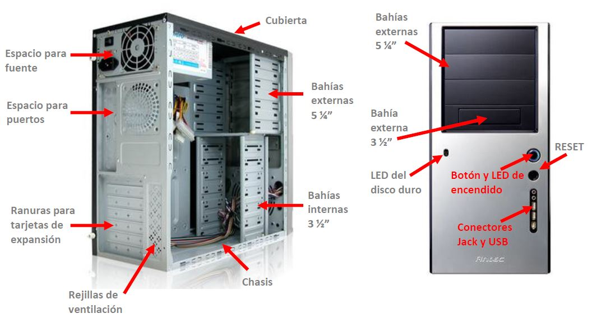
En una bahía externa podríamos conectar, por ejemplo, una unidad DVD y en una bahía interna un disco duro.
Fuente de alimentación
Los ordenadores, como todos los aparatos electrónicos (teléfonos móviles, televisores, vídeos, etc.) fun cionan con corriente continua. Sin embargo, la corriente que se genera en las centrales eléctricas y llega a los consumidores es corriente alterna. Por tanto, para hacer funcionar un aparato electrónico con la corriente de un enchufe, hay que convertir la corriente alterna que éste proporciona en corriente continua. A esta operación se le llama rectificación de la corriente alterna y se hace con un dispositivo que se llama fuente de alimentación. Otra de las funciones de una fuente de alimentación es reducir la tensión que recibe de la red, de 230 V, al valor que necesita el aparato electrónico para funcionar, normalmente entre 3 y 12 V.
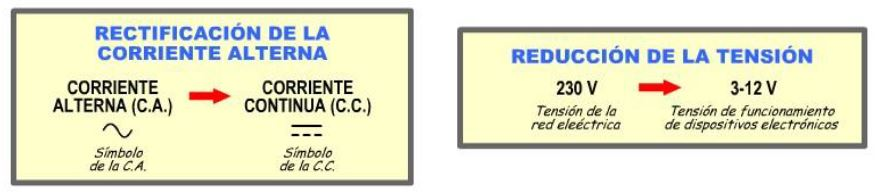
La fuente de alimentación dispone de varias salidas de corriente continua, con diferentes valores de tensión , así como de conectores para alimentar a la placa base, discos duros, CD y DVD, ventiladores, etc.
Debido a que la fuente de alimentación realiza un trabajo, se calienta. Para evitar que se caliente en exceso, tiene un ventilador que recoge aire frío del exterior y lo hace pasar por su interior.
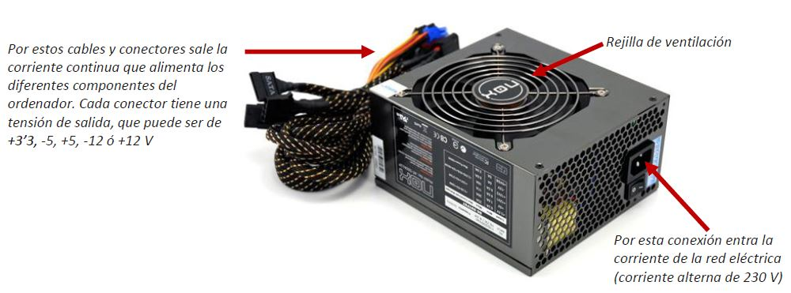
La placa base
La placa base, también llamada placa principal (mainboard) o placa madre (motherboard, es uno de los principales componentes del ordenador. Se trata de una placa de plástico atornillada al chasis de la caja del ordenador, con un circuito grabado en su superficie (un circuito impreso, formado por con conductores de cobre llamados pistas). La placa base tiene dos funciones:
Servir de soporte: algunos de los componentes del ordenador están sujetos o soldados a la placa base, que les proporciona un soporte físico. Es el caso del microprocesador, de las memorias RAM y ROM, de las tarjetas de vídeo,…
Permitir la comunicación entre los diversos elementos del ordenador. En la superficie de la placa base, hay conductores de cobre, pistas, que permiten que circulen los datos en forma de impulsos eléctricos. Toda la información que procesa el ordenador pasa por la placa base.
La calidad de la placa base influye sustancialmente en la velocidad del ordenador, además, determina el tipo de elementos que podemos tener (procesador, memoria RAM, tarjetas,…). Sus principales elementos son:
Socket o zócalo del microprocesador. Se trata de un conector de grandes dimensiones donde se conecta el microprocesador y que también permite la sujeción del elemento refrigerador del microprocesador llamado cooler. Así, el microprocesador puede localizarse fácilmente en una placa base, pues se encuentra siempre debajo del cooler, que lo refrigera. Cada microprocesador está fabricado con un estándar válido para un determinado tipo de socket, por lo que debe existir compatibilidad al elegir una placa base y un microprocesador por separado.
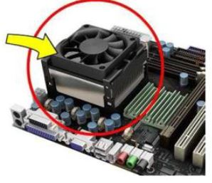 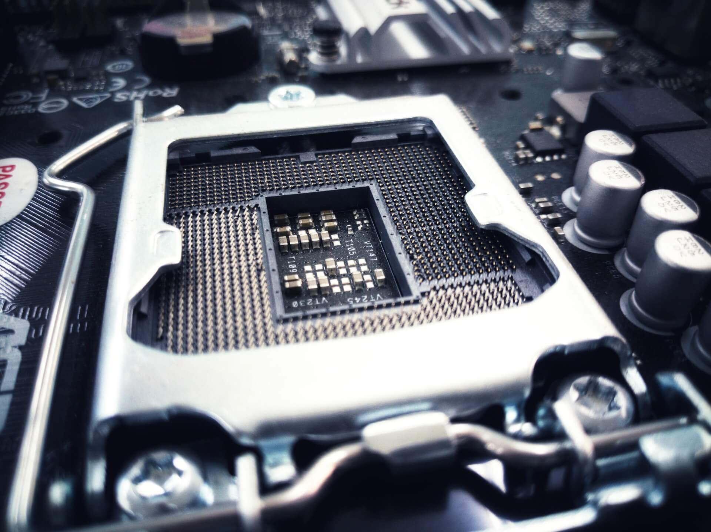
Ranuras (slots) de memoria RAM. Los módulos de memoria evolucionan constantemente en velocidad de proceso y comunicación. Actualmente, las placas base suelen disponer de varias de tipo DIMM para memorias DDR4 o DDR5 (288 pines o contactos).
Chipset. Se trata de un conjunto de circuitos integrados en la placa base encargados del control del tráfico de datos entre el microprocesador y el resto de elementos. Suelen integrar el llamado microprocesador gráfico (o GPU) en su interior. Actualmente, se compone de dos chips: el puente norte o northbridge y el puente sur o southbridge, que se encargan de la comunicación de la CPU con los componentes más rápidos y lentos del sistema, respectivamente.
Chips BIOS y CMOS. Circuitos integrados que contienen información grabada por el fabricante esencial para que el equipo arranque con éxito. La BIOS contiene instrucciones para realizar el chequeo inicial del equipo y la CMOS almacena los valores de referencia para comparar con el chequeo. Así, se puede saber si hay algún cambio en los componentes o en la configuración del sistema. En los equipos de sobremesa modernos, la BIOS ha sido reemplazada por la UEFI (firmware extensible unificado) con mejoras sustanciales, una interfaz gráfica más moderna, un inicio seguro y una mayor velocidad de arranque. La información existente en estos chips no se borra al apagar el equipo (se trata de memorias tipo ROM o Read Only Memory). De todas formas, para mantener algunos datos de configuración del usuario (fecha, número de discos duros, etc.), las placas base utilizan una pila de botón que mantiene siempre alimentados a estos circuitos. 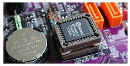
Ranuras de expansión. Son conectores para las tarjetas que amplían la capacidad de nuestro ordenador, como las tarjetas de red, de vídeo o de audio. Las ranuras más utilizadas son las llamadas PCI aunque muchas tarjetas de vídeo utilizan las ranuras AGP. Las más modernas son las PCIExpress, que tienen altas velocidades de transmisión de datos.
Conectores IDE y SATA. Son conectores para los discos duros y las unidades de almacenamiento. En la actualidad sólo se utilizan los conectores SATA, que van evolucionando en velocidad de transmisión: SATA II (3 Gb/s), SATA III (6 Gb/s).
Conectores para los cables de la fuente de alimentación. La fuente de alimentación se conecta a la placa base por un conector llamado ATX de 24 pines de extensión. Se encuentran, además, unos conectores que alimentan los discos duros y unidades ópticas con formato SATA y otros conectores llamados Molex que pueden alimentar ventiladores y discos antiguos IDE. Las placas más modernas también necesitan alimentación adicional para las placas PCIExpress, por lo que poseen un conector de 6 pines especial.
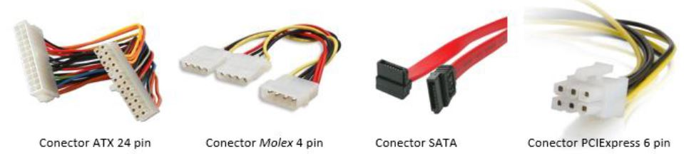
Puertos de entrada/salida. Se suelen colocar en la parte trasera del ordenador y permiten la comunicación entre el equipo y los periféricos. Normalmente se encuentran en la placa base, aunque con tarjetas de expansión podemos añadir nuevos puertos o aumentar su número (por ejemplo, si necesitamos más puertos USB). Actualmente podemos encontrar:
USB. Es el puerto estándar por excelencia, para conectar todo tipo de dispositivos, como pendrives, teclados, ratones, impresoras,... Actualmente, los nuevos PC's incorporan ya puertos USB 3.1 (que triplican en velocidad a los 3.0) e incluso, puertos USB C, con formato de conector diferente.
HDMI, para transmitir vídeo y audio de alta definición.
Puerto Ethernet, para la conexión de red por cable.
Puertos de audio, para la conexión de altavoces, micrófono, etc.
Otros puertos menos comunes, como el FDDI (para la fibra óptica) el eSATA(para dispositivos de almacenamiento externo), puerto de vídeo displayport (de funcionamiento similar al HDMI pero pensado para ordenadores y no para televisores), etc.
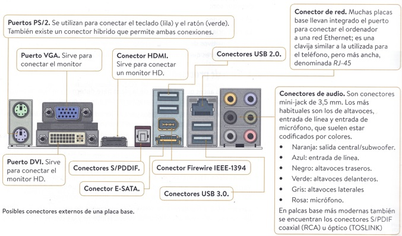
Los periféricos que pueden conectarse a los puertos suelen clasificarse en periféricos de entrada (para la introducción de datos o instrucciones, como el teclado, el ratón y el micrófono), de salida (para obtener información, como en el caso del monitor, la impresora y los altavoces) y de entrada/salida (que pueden servir para ambas cosas, como en el caso de una pantalla táctil).
Factor de forma.
El factor de forma de la placa base es un estándar de fabricación que sirve para definir, entre otras cosas, los tamaños de la placa base y la disposición de los distintos elementos que van sobre ella. Los factores de forma para ordenadores de sobremesa existentes en el mercado son:
ATX. El factor de forma ATX (advanced technology extended) fue desarrollado en 1995 por Intel y aún sigue siendo el más común en el mercado. El tamaño de una ATX estándar es de 30,5 x 24,4 cm, pero han surgido distintos formatos en función del tamaño: microATX,miniATX, flexATX y eATX.
ITX. El factor de forma ITX (integrated technology extended) fue desarrolladopor VIA Technologies en 2001 con rasgos similares a las especificaciones microATX y flexATX. Debido al pequeño tamaño del circuito impreso en laplaca, el coste delproducto disminuye, resultando más económicas que las ATX convencionales. Dentro de la familia ITX, hay distintos formatos en cuanto al tamaño:miniITX, thin miniITX, nanoITX, picoITX.
El microprocesador
El circuito integrado más importante de un ordenador es el microprocesador, también llamado CPU,de Central Processing Unit (aunque de forma coloquial se llama CPU a toda la torre del ordenador, lo correcto sería reservar este nombre solamente para el microprocesador). En su interior existen millones de transistores que realizan las operaciones aritméticas y lógicas que permiten ejecutar el software de la máquina. Como ya hemos visto, se conecta a la placa base por un zócalo y precisa de un disipador de calor con ventilación para evacuar la gran cantidad de calor que genera. Los avances en la tecnología de los microprocesadores tienen como objetivo reducir su tamaño para incluir más capacidad de procesamiento en el mismo espacio, reducir su consumo y emisión de calor para poder utilizarse en dispositivos móviles y aumentar la velocidad de trabajo, que se mide por la frecuencia de reloj en MHz.
Las características que hay que tener en cuenta al evaluar un procesador son:
Arquitectura del bus de comunicación. Los microprocesadores de los años setenta funcionaban con una arquitectura de 8 bits. Hoy trabajan, normalmente a 64 bits. Este dato nos indica la cantidad de bits simultáneos que puede recibir y procesar el microprocesador.
Número de núcleos. La tendencia de los últimos avances es incluir más núcleos de cálculo en un mismo encapsulado. De esta manera se pueden realizar operaciones en paralelo. Dual-core, quad-core, octa-core son los términos empleados para indicar que contienen 2, 4 u 8 núcleos, respectivamente.
Memoria caché. Se trata de una memoria interna que permite un acceso ultra rápido a los datos, sin necesidad de acudir a la memoria RAM a recoger o almacenar datos. En los microprocesadores actuales, suele ser del orden de 8 MB. La mayoría de los procesadores actuales tienen tres tipos de memoria caché diferentes, también llamados niveles. Es lo que se conoce como caché L1, L2 y L3… hasta la LLC (Last Level Cache), que es el último nivel que se implementa, sea una L2, una L3, L4, etc. Los niveles más bajos son los más rápidos, pero con menor capacidad, mientras los niveles más altos están algo más alejados de la unidad de control y son más lentos, aunque de mayor capacidad (siempre del orden de MB).
Frecuencia de reloj. Esta característica nos indica la cantidad de operaciones que el microprocesador puede realizar por segundo y está directamente relacionada con el consumo y el calentamiento del microprocesador. En los últimos años se ha mantenido relativamente estable, entre 2 y 4 GHz, aunque al existir más núcleos se ha aumentado la capacidad manteniendo los niveles de frecuencia de reloj. Un ordenador de 3GHz realiza tres mil millones de acciones por segundo; una instrucción puede necesitar más de una acción para su ejecución.
Memoria principal o memoria RAM
La memoria principal, o memoria RAM, almacena las instrucciones de los programas y datos que el procesador está utilizando. Normalmente, cuando se ejecuta un programa, este tiene que estar instalado en el disco duro. Al ejecutarlo por primera vez, el sistema operativo copia automáticamente, desde el disco duro a la memoria RAM, las instrucciones que componen el programa. A continuación, el procesador lee las instrucciones de la memoria RAM, que es más rápida que el disco duro. Del mismo modo, todos los datos que generemos con el programa se van almacenando en la memoria RAM. Con la operación de guardar, los datos se salvan en el disco duro. Si ocurriera un corte de suministro eléctrico, todos los datos que no se hayan guardado, se perderán.
Las características principales de la memoria RAM son las siguientes:
Es una memoria volátil, es decir, los datos se pierden si deja de alimentarse con corriente eléctrica.
Es de acceso aleatorio o acceso directo (de ahí su nombre Random Access Memory), en contraposición a acceso secuencial. Esto significa que no es necesario recorrer la memoria en un orden determinado para acceder a la información, como sucedía en las antiguas cintas.
Está formada por chips electrónicos, que son pequeños circuitos fabricados con un material semiconductor.
Se comercializa en módulos de memoria, que son tarjetas en las que se colocan los chips de RAM. El número de contactos (o pines) y el tamaño de la tarjeta definen el factor de forma de la misma. En la actualidad el factor de forma más utilizado es el DIMM (dual inline memory module). La compra de memoria RAM es una práctica habitual que se realiza tanto para actualizar un ordenador como para sustituir módulos de memoria defectuosos. Es recomendable que los módulos que se compren sean de la misma marca, modelo y velocidad. Además, tienen que ser compatibles con la placa base, por lo que hay que tener en cuenta los siguientes parámetros:
Capacidad máxima que soporta la placa base (actualmente, los ordenadores de sobremesa normales permiten de 4 a 16 GB de memoria RAM).
Tecnología de los módulos de memoria que soporta. Las placas base actuales utilizan tecnología DDR4 con 288 pines de conexión, de hasta 32 o más GB por módulo.
Velocidad, que se mide en MB/s (megabytes por segundo).
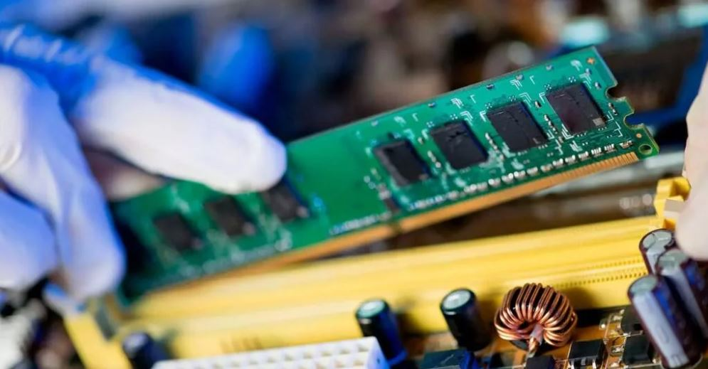
Dispositivos de almacenamiento secundario
Las memorias de almacenamiento secundario son todos aquellos soportes que sirven para guardar información de forma masiva (del orden de gigabytes e incluso de terabytes) y permanente (su contenido permanece aunque se apague el ordenador). Son, básicamente, discos duros, unidades ópticas y memorias flash en sus diferentes versiones.
El disco duro
El dispositivo que normalmente utilizamos para guardar los datos cuando trabajamos en el ordenador es el disco duro, el cual se conecta directamente a la placa base mediante un cable o bus de conexionado y requiere una alimentación eléctrica desde la fuente de alimentación. Existen en la actualidad diferentes tipos de discos duros:
Discos duros magnéticos o HDD. dispone de una caja metálica que contiene en su interior uno o varios discos de aluminio apilados. Los discos giran a gran velocidad impulsados por un motor eléctrico. En la superficie de estos discos hay una película de un material magnético. Un dispositivo denominado cabezal de lectura y escritura, instalado en el extremo de un brazo articulado, graba la información en la superficie magnética. Estos discos casi no se utilizan hoy en día; aunque pueden ser de gran capacidad, suelen ser lentos y ruidosos pero, eso sí, bastante económicos.
Disco duro HDD sin tapa de protección.
Unidades de estado sólido o discos SSD. Su función es la misma que la de los discos duros magnéticos, pero se basan en otra tecnología diferente (la misma que la de las memorias flash). No disponen de partes mecánicas, por lo que tienen un menor tamaño y peso y la velocidad de acceso a los datos es mucho mayor. En contra, un disco SSD suele ser (a igualdad de capacidad de almacenamiento), más caro que uno HDD. Existen diferentes tipos en el mercado, que se diferencian tanto en la tecnología de fabricación, como en el factor de forma (el factor de forma M.2 es el que se está imponiendo en el mercado) y en la conexión a la placa base (conexión SATA o PCIe son las habituales).
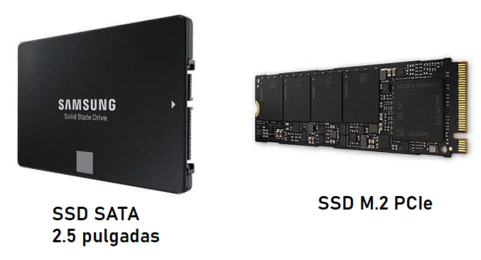
Unidades ópticas
(CD, DVD y Blue-Ray). A pesar de que los discos duros pueden almacenar una gran cantidad de información, a menudo es necesario otro dispositivo de memoria masiva (de gran capacidad) que sea externo; por ejemplo, para que un fabricante distribuya programas, para hacer copias de seguridad de nuestros archivos, grabar fotos, audio o vídeo, etc. Los más utilizados son los dispositivos de memoria óptica: CD (compact disc) y DVD (digital versatile disc).
Hay muchos tipos de CD y DVD según sus características técnicas. Los podemos agrupar en tres grupos:
Únicamente de lectura: CD-ROM (read only memory), DVD-ROM.
Grabable una sola vez (solo una escritura): CD-R (recordable), DVD-R, DVD+R.
Para grabar información en cualquiera de ellos es necesario disponer de una unidad grabadora y un software específico. Los datos almacenados en una memoria óptica quedan guardados de forma permanente, es decir, no se pierden al apagar el ordenador. Los discos están compuestos de una superficie de policarbonato y otra de aluminio reflectante recubierta de plástico protector fotosensible. Utilizan un haz de rayo láser tanto para leer los datos como para grabarlos (por eso se les llama “ópticos”). Los datos quedan grabados en forma de hoyos o surcos microscópicos, creados por deformaciones que produce el láser en el material fotosensible. En el proceso de lectura se enfocan con un láser las pistas de datos y mediante un fotodiodo se leen los cambios de luz reflejada en los hoyos y surcos; posteriormente se decodifica la información.
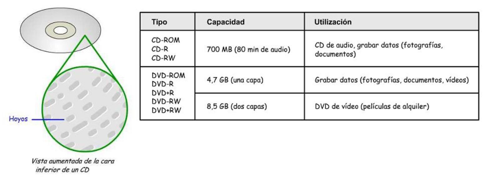
Blue Ray es uno de los últimos formatos de disco óptico. Desarrollado por Sony, puede almacenar hasta 50 GB gracias a una nueva tecnología láser. Permite además una sobreescritura más fiable, con menos errores de grabación y mayor resistencia física.
Memorias flash (memorias USB y tarjetas de memoria y memorias)
Una memoria USB (Universal Serial Bus) es un dispositivo de almacenamiento masivo que se conecta mediante un puerto USB y la información que a éste se le introduzca puede ser modificada millones de veces durante su vida útil. Estas memorias son resistentes a los rasguños (externos), al polvo, y algunos al agua. En España son conocidas popularmente como pinchos, lápices de memoria o pendrives. Estas memorias han llegado a ser el sistema de almacenamiento y transporte personal de datos más utilizado. Se pueden encontrar en el mercado fácilmente memorias con capacidad que van desde 4GB hasta 1 TB (éstas últimas ya por precios inferiores a los 100 euros).
Los sistemas operativos actuales pueden leer y escribir en estas memorias sin más que enchufarlas a un conector USB del equipo encendido, recibiendo la energía de alimentación a través del propio conector. Otros dispositivos de almacenamiento externo parecidos a los lápices de memoria son las tarjetas de tipo SD (SDSC, SDHC y SDXC según su capacidad de almacenamiento, de menos a más respectivamente, y SD, mini-SD o micro-SD según su tamaño y grosor). Estos dispositivos necesitan lectores especiales instalados en el ordenador.
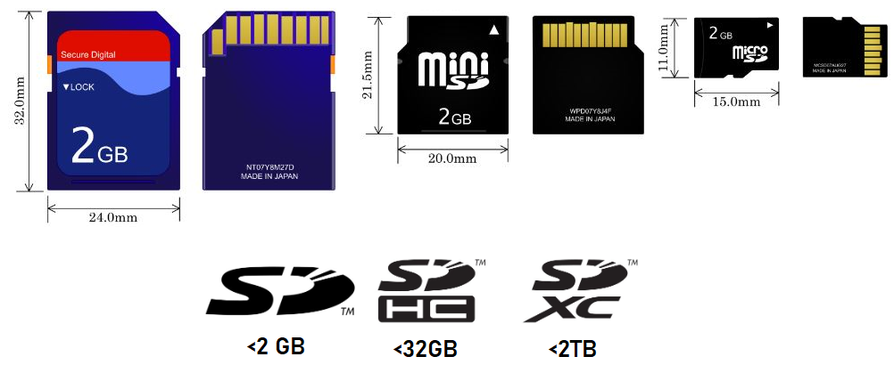
Tarjetas de expansión
Permiten ampliar las prestaciones del equipo, para lo cual disponen en la placa base de varias ranuras para montarlas.
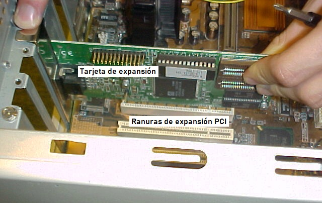
Normalmente, se utilizan estas tarjetas por dos motivos:
Para dotar al equipo de nuevas capacidades, por ejemplo, tarjetas para sintonizar la TV, para dotar de conectividad WiFi a los ordenadores de sobremesa, etc.
Para mejorar las prestaciones de algunos componentes ya existentes en la placa base, como por ejemplo el sonido o los gráficos. En este último caso, existen en el mercado algunas tarjetas gráficas con su propio procesador, memoria y refrigeración.
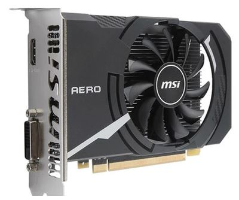
Tarjeta gráfica actual.
Nota: El procesador gráfico es un componente que necesariamente se encuentra instalado en nuestro ordenador, el cual se dedica al procesar todo lo que tiene que ver con la salida de vídeo a nuestro monitor.
No existirían monitores si tampoco existieran procesadores gráficos, ni mucho menos juegos en 3D, ya que su existencia es indispensable para crear, procesar, renderizar y dar efectos a las texturas digitales. Estos procesadores se pueden encontrar instalados en la placa base (hablaríamos entonces de gráficos integrados), o en una tarjeta de expansión mediante una tarjeta gráfica (hablaríamos entonces de gráficos dedicados).
Buses de comunicación
Un bus es un conjunto de cables (hilos o conexiones) que llevan información digital (0s y 1s) de un elemento a otro del ordenador. Los buses se suelen comparar con las autopistas, siendo los carriles de la autopista los hilos del bus y los coches la información que por ellos discurre. Por ejemplo, un bus de 8 bits consta de 8 carriles, en los que pueden circular 8 coches (bits) simultáneamente. La velocidad del bus (medida en MHz o GHz) sería la velocidad máxima a la que pueden circular los coches por los carriles.
Tipos de Buses Podríamos hacer una primera clasificación:
Buses internos. Llevan los datos por dentro de la placa base. Normalmente se llaman pistas. Un bus interno permite la comunicación entre los componentes internos, tales como una tarjeta de vídeo y las memorias.
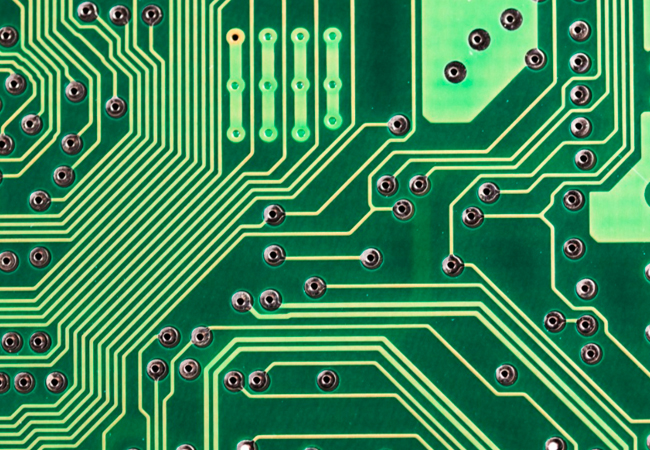
Buses externos. Transportan datos a periféricos y otros dispositivos conectados a la placa base. Estos son a los que, por defecto, nos referimos al hablar de buses. Un bus externo es capaz de comunicarse con componentes externos como un disco duro. En función de su forma tenemos:
ATA (Advanced Technology Attachment) es un bus estándar para conectar dispositivos de almacenamiento como discos duros y unidades de CD-ROM en los ordenadores. Existen muchos términos y sinónimos de ATA, como IDE, ATAPI, y UDMA. Bus ancho y plano, que suele tener 40 cables dispuestos en paralelo (uno al lado del otro), permitiendo el envío de muchos bits a la vez a través de un conector de 40 pines.
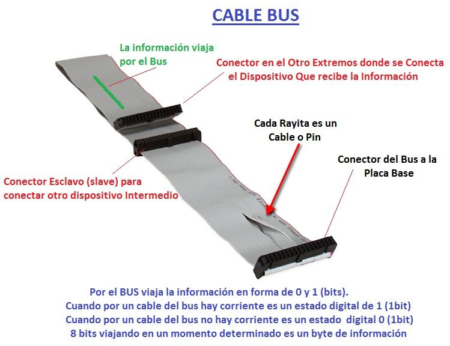
Bus tipo ATA o IDE.
SATA (serial ATA), la evolución del de ATA. Utiliza un cable con menos conductores y un conector mucho más pequeño. Permite mayores velocidades de transmisión de datos y ocupa menos espacio.
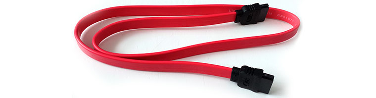
Bus tipo SATA.
En realidad, cada bus está dividido en tres subconjuntos, por los cuales puede viajar distinta información, por lo que tienen nombres distintos:
Bus de datos. Por este bus se transmite la información del usuario, los datos y las instrucciones de los programas. Permite que viajen los datos desde los dispositivos de entrada hacia los dispositivos de salida, o en ambos sentidos si se intercambia información con las unidades de almacenamiento.
Bus de direcciones. A través de este bus circula la dirección física a la que debe llegar la información que se está transmitiendo en ese momento por el bus de datos. Es como un número de teléfono que indica si la información debe ser dirigida a la memoria RAM y a qué dirección de la memoria RAM; o si debe ser dirigida a la impresora o a la pantalla, etc.
Bus de control. Por este bus se transmiten las señales de control que el procesador necesita para coordinar todas las operaciones y conocer el estado de los dispositivos. Por ejemplo, indica si la operación es de lectura o es de escritura.
EJEMPLO: Dada una memoria RAM de 1 KB de capacidad con una palabra de 1 byte, se quiere escribir en la dirección 3 la palabra 00001111. La memoria RAM recibe por el bus de control que tiene que realizar una operación de escritura, recoge la dirección que viene por el bus de direcciones (dirección 3) y escribe en esta dirección la palabra que obtiene del bus de datos (00001111). Una vez realizada laoperación de escritura, la dirección 3 de la memoria ya no tendrá almacenada lapalabra 01010101 sino la 00001111.
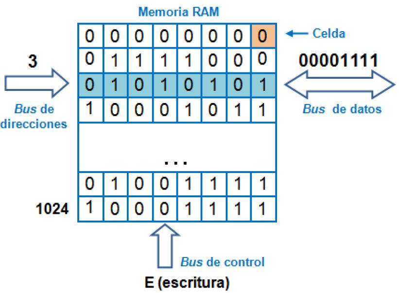
Para saber más
Tecnología dual channel en las memorias RAM.
La tecnología dual channel en las placas base aumenta el rendimiento, al permitir acceder a 2 módulos de memoria RAM al mismo tiempo. Con eso quiero decir que al conectar 2 módulos de memoria RAM al slot del mismo dual channel, permite que se traten como si fueran un solo bloque de memoria RAM, y acceder a ambos módulos al mismo tiempo (así, mejor dos módulos de 4Gb en dual channel, que uno solo de 8 GB). Para ésto, los módulos deben tener exactamente las mismas especificaciones, misma velocidad, misma capacidad, etc...
Se empezó a aplicar esta tecnología a partir de las memorias DDR.
Para identificar los slots de dual channel debemos fijarnos en los colores de los slots, los que tengan el mismo color pertenecen al mismo dual channel; así que si por ejemplo, hay 2 slots de color amarillo y 2 slots de color azul, los módulos de memoria que quieras hacer funcionar en dual channel debes colocarlos en los slots amarillos o azules, y si por casualidad tienes otros 2 módulos más para hacerlos funcionar en dual channel, debes conectarlos al otro color que sobre.
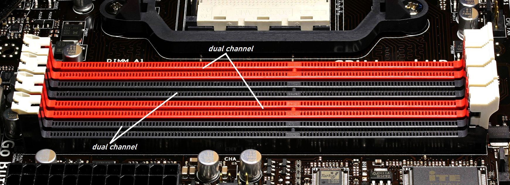
Imagen con dos dual channel para aplicar esta tecnología en 4 módulos de memoria.